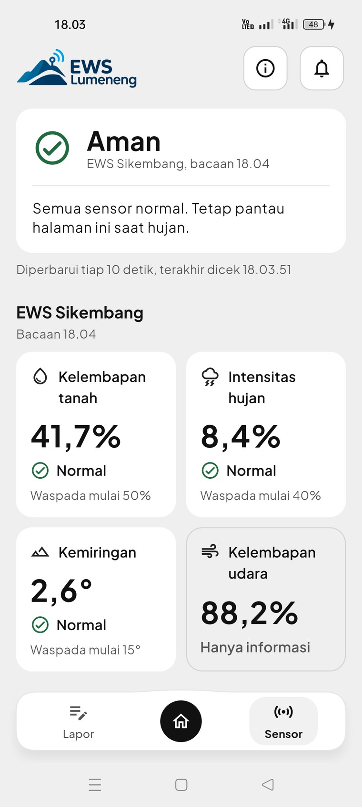
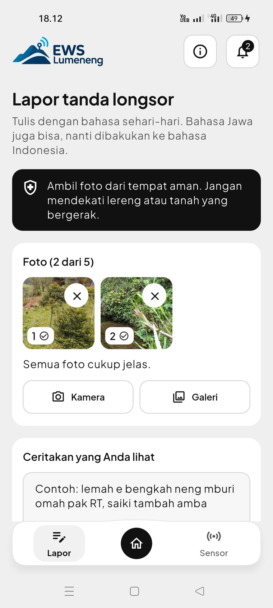
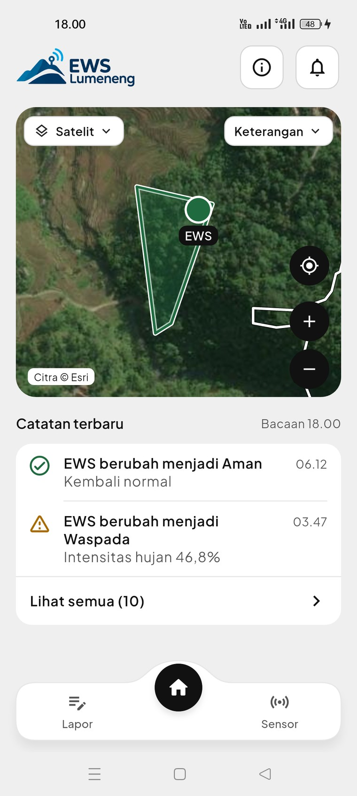
Gambar layar di buku ini diambil dari aplikasi EWS Lumeneng versi 1.0.0 di HP Android. Supaya semua keadaan bisa ditunjukkan (Aman, Waspada, Awas, dan Tidak ada data), angka sensor, jam, catatan, dan koordinat yang terlihat adalah data contoh. Kondisi sebenarnya selalu dilihat langsung di aplikasi.
Aplikasi akan terus diperbarui. Bila ada tulisan atau tombol yang berbeda dari gambar di buku ini, ikuti petunjuk yang tertulis di layar HP.
Puji syukur kami panjatkan ke hadirat Tuhan Yang Maha Esa atas rahmat dan karunia-Nya, sehingga Manual Book Aplikasi EWS Lumeneng ini dapat kami susun. Buku ini merupakan bagian dari program kerja Tim Aksara Desa Lumeneng 2026 di bidang pengurangan risiko bencana.
Desa Lumeneng berada di perbukitan dengan ketinggian 540 sampai 1.350 mdpl, dan lereng di bagian selatannya curam. Kajian Pemetaan Bencana Desa Lumeneng tahun 2024 mencatat sebelas kejadian tanah longsor antara tahun 1944 dan 2024. Pada longsor besar Gunung Bongkok tahun 1944, sebagian besar warga Dukuh Sikudi selamat karena sudah mengenali tanda-tanda longsor dan segera pindah ke tempat aman. Pengalaman itu menunjukkan bahwa tanda yang diketahui lebih awal dapat menyelamatkan nyawa.
Aplikasi EWS Lumeneng dibuat untuk membantu hal tersebut. Aplikasi ini menampilkan bacaan alat peringatan dini (EWS) yang dipasang di lereng Sikembang, membunyikan peringatan di HP saat statusnya berubah, dan memudahkan warga melaporkan tanda longsor kepada penanggung jawab. Buku ini menjelaskan cara memasang dan memakai aplikasi tersebut langkah demi langkah, lengkap dengan gambar layar dan arti setiap tanda yang muncul.
Kami berterima kasih kepada Pemerintah Desa Lumeneng dan warga yang telah menerima dan mendukung kegiatan kami, kepada dosen pembimbing, serta kepada LPBI NU Kabupaten Pekalongan dan Ringan Tangan Indonesia yang kajiannya menjadi dasar peta rawan longsor di dalam aplikasi.
Aplikasi ini akan terus diperbarui, sehingga isi buku ini juga dapat berubah. Saran dan masukan dari pembaca akan kami gunakan untuk edisi berikutnya. Semoga buku ini bermanfaat bagi warga Desa Lumeneng.
Buku ini menjadi pegangan warga dan perangkat Desa Lumeneng dalam memakai aplikasi EWS Lumeneng sehari-hari, terutama saat musim hujan. Secara rinci, buku ini disusun untuk:
| Tanda | Artinya |
|---|---|
| 1 | Nomor bulat pada gambar layar. Penjelasannya ada pada daftar bernomor di samping atau di bawah gambar. |
| Periksa laporan | Tulisan tebal adalah nama tombol atau tulisan yang terlihat di layar HP. |
| Penting | Hal yang wajib diperhatikan supaya aplikasi dipakai dengan benar. |
| Tips | Cara yang memudahkan, tetapi tidak wajib. |
| Keselamatan | Pengingat keselamatan, sama seperti kotak hitam di menu Lapor. |
EWS adalah singkatan dari Early Warning System, artinya sistem peringatan dini. EWS Lumeneng adalah aplikasi Android untuk warga Desa Lumeneng, Kecamatan Paninggaran, Kabupaten Pekalongan. Aplikasi ini punya tiga tugas:
Aplikasi ini tidak memakai akun, jadi tidak perlu mendaftar atau mengingat kata sandi.
Aplikasi ini alat bantu pemantauan warga, bukan peringatan resmi BPBD. Saat ragu, utamakan keselamatan dan ikuti arahan perangkat desa.
Wilayah Desa Lumeneng seluas 884,6 hektare didominasi perbukitan dengan ketinggian 540 sampai 1.350 mdpl. Kontur di bagian selatan rapat, berupa lereng bukit yang curam, dan curah hujannya tinggi.
Kajian Pemetaan Bencana Desa Lumeneng 2024 mencatat 11 kejadian longsor sejak 1944. Yang terbesar adalah longsor lereng Gunung Bongkok tahun 1944, yang menggusur hampir seluruh permukiman Dukuh Sikudi. Dari sekitar 40 kepala keluarga, hanya 4 rumah yang tersisa. Sebagian besar warga selamat karena sudah mengenali tanda-tanda longsor dan segera keluar ke tempat aman. Mereka kemudian membangun permukiman baru yang sekarang dikenal sebagai Dukuh Sumingkir.
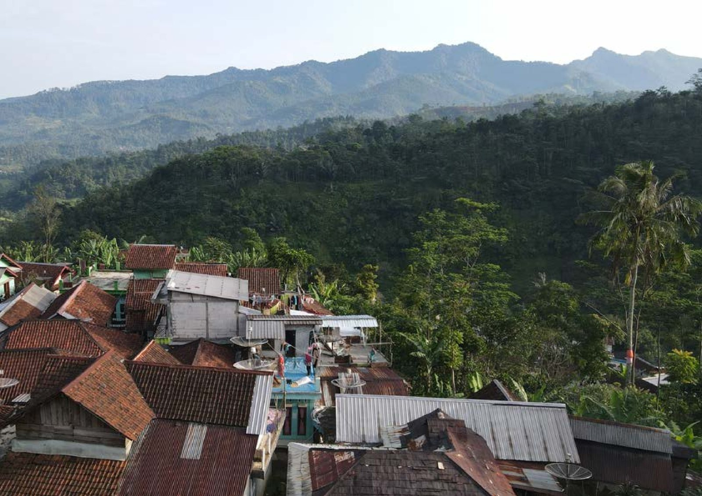
| Tahun | Lokasi | Kejadian | Dampak |
|---|---|---|---|
| 1944 | Dukuh Sikudi | Longsor Gunung Bongkok | Korban jiwa, permukiman tergusur |
| 2008 | Kaliwisnu | Longsor tebing | 2 rumah, jalan, sawah, dan ladang rusak |
| 2020 | Wetan Atas | Longsor tebing | 1 rumah |
| 2020 | Wanasida | Longsor tebing | Jaringan air |
| 2022 | Kaliwisnu | Longsor permukiman | 3 rumah, jalan, dan sawah rusak |
| 2022 | Sikembang | Longsor permukiman | Bagian belakang rumah rusak |
| 2023 | Wanasida | Longsor tebing | Jaringan air |
| 2023 | Wanasida | Longsor permukiman | 2 rumah |
| 2023 | Kaliwisnu | Longsor tebing | 3 rumah, jalan, dan sawah rusak |
| 2023 | Krajan | Longsor permukiman | Pagar rumah |
| 2024 | Sikembang | Longsor tebing jalan | Jalan |
Sumber: Kajian Pemetaan Bencana Desa Lumeneng 2024. Dua kejadian terbaru di Sikembang (2022 dan 2024) terjadi di dukuh yang sama dengan lokasi alat EWS sekarang.
Status Aman, Waspada, dan Awas selalu ditentukan oleh server desa, tidak dihitung sendiri oleh aplikasi. Karena itu, semua HP yang tersambung menampilkan status yang sama.
Ada empat keadaan yang perlu dikenali. Tiap keadaan punya ikon dan bentuk penanda sendiri, jadi tetap bisa dibedakan tanpa melihat warna.
| Ikon | Di peta | Status | Artinya | Yang dilakukan |
|---|---|---|---|---|
| | Aman Di peta dan detail alat tertulis Normal |
Semua sensor di bawah batas waspada. | Beraktivitas seperti biasa. Tetap pantau aplikasi saat hujan. | |
| | Waspada | Ada sensor yang melewati batas waspada: tanah mulai jenuh air, hujan deras, atau lereng mulai bergerak. | Hindari lereng. Siapkan tas siaga dan jalur evakuasi. Pantau kabar dari petugas. | |
| | Awas | Kabel pada alat EWS putus, yang bisa terjadi bila tanah di lereng bergerak, atau status Awas ditetapkan admin. | Segera menjauh dari lereng dan ikuti arahan petugas. Saat darurat, telepon 112. | |
| | Tidak ada data | Alat tidak mengirim data, atau HP belum tersambung ke server. Kondisi sekarang belum diketahui. | Jangan anggap sudah aman. Periksa sinyal HP dan ikuti kabar dari perangkat desa. |
Saran yang tampil di aplikasi dikirim oleh server desa dan bisa disesuaikan oleh pengelola EWS bersama perangkat desa. Bila berbeda dengan tabel ini, ikuti saran di aplikasi dan arahan petugas.
| | HP Android versi 7.0 atau lebih baru. |
| | Ruang penyimpanan kosong minimal 200 MB. File pemasangannya berukuran sekitar 80 MB. |
| | Paket data atau WiFi. Selama aplikasi dibuka, data dicek tiap 10 detik. Bila tidak ada perubahan, server hanya membalas singkat sehingga kuota hemat. Peta satelit memakai kuota lebih banyak saat digeser. |
| | Lokasi (GPS) HP. Untuk titik Anda di peta dan lokasi laporan. |
| | WhatsApp. Untuk mengirim laporan. Nomor penanggung jawab tidak perlu disimpan di kontak. Bila WhatsApp tidak ada, aplikasi memakai menu Bagikan di HP. |
Saat buku ini disusun, EWS Lumeneng belum tersedia di Play Store. Aplikasi dibagikan sebagai file pemasangan berakhiran .apk oleh Tim Aksara Desa Lumeneng atau perangkat desa.
Minta file pemasangan EWS Lumeneng kepada tim atau perangkat desa. File biasanya dikirim lewat WhatsApp atau tautan unduhan.
Ketuk file tersebut di WhatsApp, atau buka aplikasi pengelola file di HP lalu cari di folder Download (Unduhan).
Bila muncul pesan bahwa HP tidak mengizinkan pemasangan dari sumber ini, ketuk Setelan, nyalakan Izinkan dari sumber ini, lalu kembali.
Tunggu sampai selesai. Bila Play Protect menampilkan peringatan, pilih Tetap instal hanya bila file berasal dari tim atau perangkat desa.
Ketuk Buka, atau cari ikon EWS Lumeneng (gunung biru dengan tanda sinyal) di layar HP.
Saat ada versi baru, tim akan membagikan file APK terbaru. Pasang dengan cara yang sama. Versi yang sedang terpasang bisa dilihat di halaman Tentang aplikasi (BAB 9).
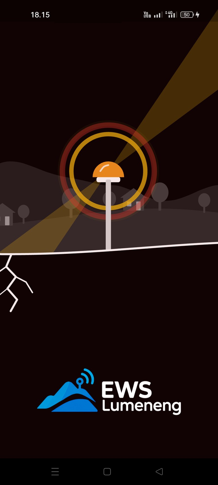
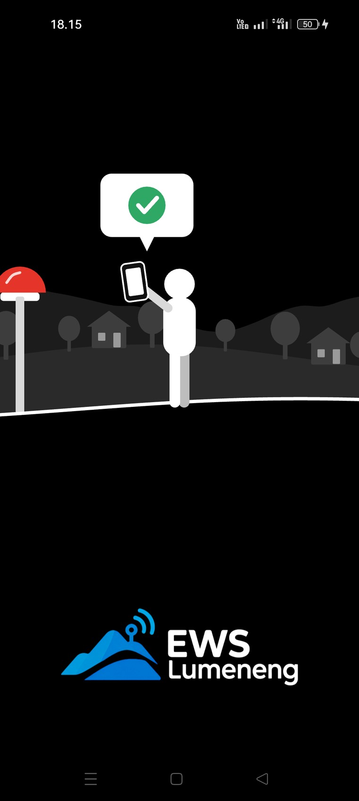
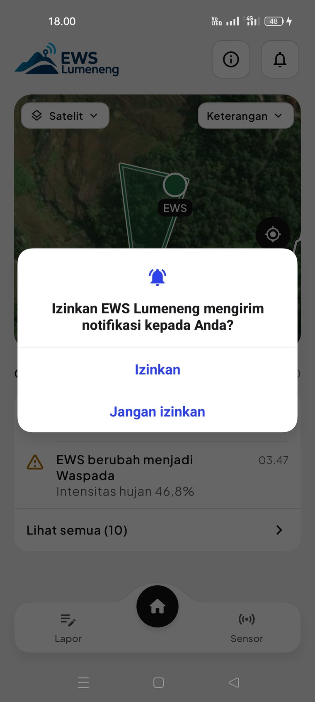
Animasi tampil beberapa detik. Ketuk layar bila ingin melewatinya. Saat status sedang Awas, animasi dilewati otomatis supaya kondisi langsung terlihat.
Bila data belum siap, muncul tulisan Mengambil data terbaru di bawah logo. Bila HP tidak ada sinyal, aplikasi langsung menampilkan data terakhir yang tersimpan di HP beserta waktunya.
Saat Beranda terbuka, HP menanyakan Izinkan EWS Lumeneng mengirim notifikasi kepada Anda? Pilih Izinkan. Tanpa izin ini, HP tidak berbunyi saat status berubah.
Ketuk lonceng di kanan atas, lalu ketuk Izinkan notifikasi. Bila jendela izin tidak muncul, nyalakan notifikasi EWS Lumeneng lewat Pengaturan HP (lihat BAB 7).
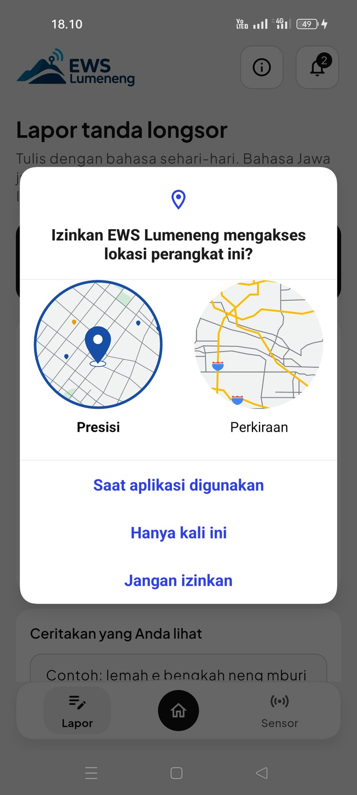
Izin lokasi diminta saat menu Lapor dibuka pertama kali, atau saat tombol lokasi saya di peta ditekan. Lokasi dipakai untuk mencatat tempat laporan dan menampilkan titik Anda di peta.
Pilih Presisi. Dengan Perkiraan, lokasi bisa meleset sampai 2 km dan petugas bisa salah tempat (lihat BAB 6, Langkah 5).
Pilih Saat aplikasi digunakan.
Bila izin ditolak, laporan tetap bisa dikirim, tetapi tanpa lokasi HP. Izin bisa diubah lagi di Pengaturan HP > Aplikasi > EWS Lumeneng > Izin.
Lokasi HP hanya dipakai selama aplikasi dibuka, dan hanya ikut terkirim bila Anda sendiri mengirim laporan.
Tulisan pada jendela izin bisa sedikit berbeda antarmerek HP, misalnya Izinkan hanya saat menggunakan aplikasi atau Saat aplikasi digunakan. Artinya sama. Pilih pilihan yang mengizinkan lokasi selama aplikasi dibuka.
| Keadaan | Yang terjadi |
|---|---|
| Aplikasi dibuka | Data dicek tiap 10 detik. Bila tidak ada perubahan, server hanya membalas singkat sehingga kuota yang terpakai kecil. |
| Peta digeser atau diperbesar | Gambar peta diunduh dari internet. Bagian inilah yang paling banyak memakai kuota, terutama citra satelit. |
| Aplikasi ditutup atau HP dikunci | Pengambilan data berhenti, jadi tidak memakai kuota dan baterai. |
| Server desa mengirim peringatan | Notifikasi tetap masuk walaupun aplikasi ditutup, selama HP tersambung internet. |
Ketuk nama menu di bagian bawah. Menu bawah tersembunyi selama papan ketik terbuka.
Halaman lain, misalnya Notifikasi atau Tentang aplikasi, punya tombol ‹ di kiri atas untuk kembali. Tombol kembali di HP juga bisa dipakai.
Isian di menu Lapor tidak hilang saat Anda pindah menu, jadi laporan bisa dilanjutkan nanti.
| | Normal atau Aman |
| | Waspada, atau sensor melewati batas |
| | Awas |
| | Tidak ada data, alat tidak mengirim |
| | Belum tersambung ke server |
| | Angka sementara dari simpanan HP |
| | Kembali ke halaman sebelumnya |
| | Tarik ke bawah untuk memperbarui data |
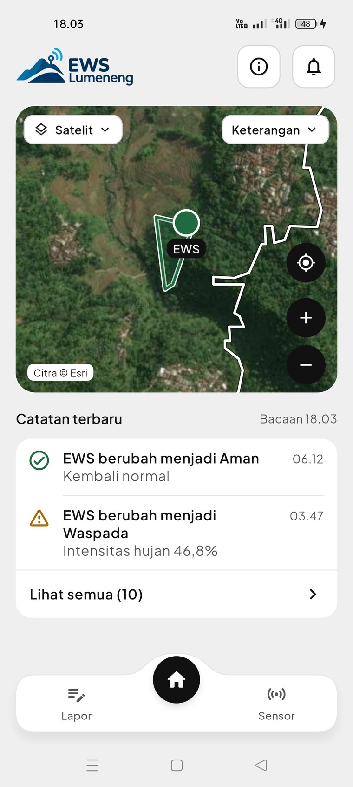
1 2 3 4 5 6 7 8 9 10| Geser dengan satu jari | Memindahkan peta. |
| Renggangkan dua jari, atau ketuk dua kali | Memperbesar peta. |
| Cubit dengan dua jari | Memperkecil peta. |
| Tombol + dan − | Memperbesar dan memperkecil satu tingkat. |
Halaman Beranda tidak bergulir supaya peta mudah digeser. Bila catatan tidak muat, gulir di dalam kartu Catatan terbaru.
| Penanda | Warna area | Status | Keterangan |
|---|---|---|---|
| EWS | Hijau | Normal | Kondisi aman. Sama dengan Aman di menu Sensor. |
| EWS | Kuning | Waspada | Penanda segitiga bertanda seru. |
| EWS | Merah | Awas | Penanda belah ketupat bertanda seru. |
| EWS | Putih atau abu-abu | Tidak ada data | Penanda bulat bergaris putus dengan tanda tanya. Kondisi sekarang belum diketahui. |
Artinya bacaan di peta bukan kondisi sekarang: alat sedang tidak mengirim data, atau aplikasi sudah lama tidak tersambung ke server. Status Waspada dan Awas tetap ditampilkan, karena alat bisa berhenti mengirim justru saat tanah bergerak.
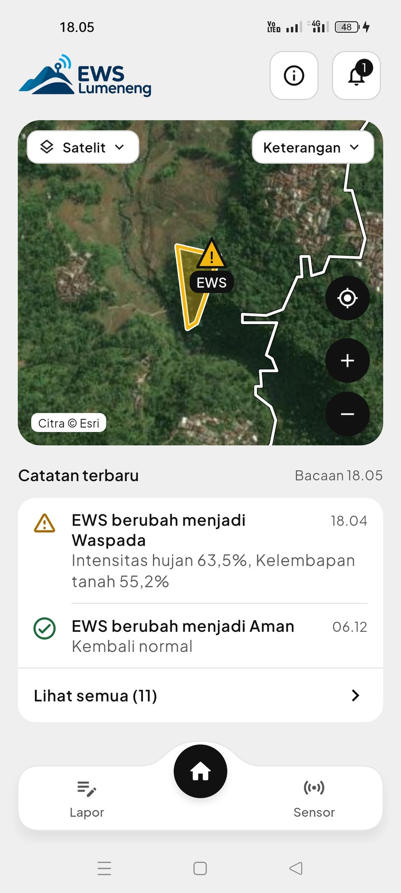
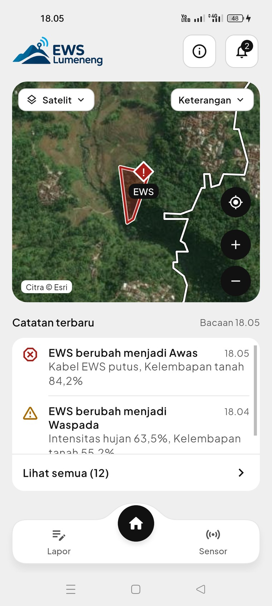
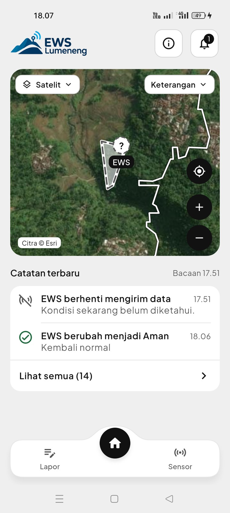
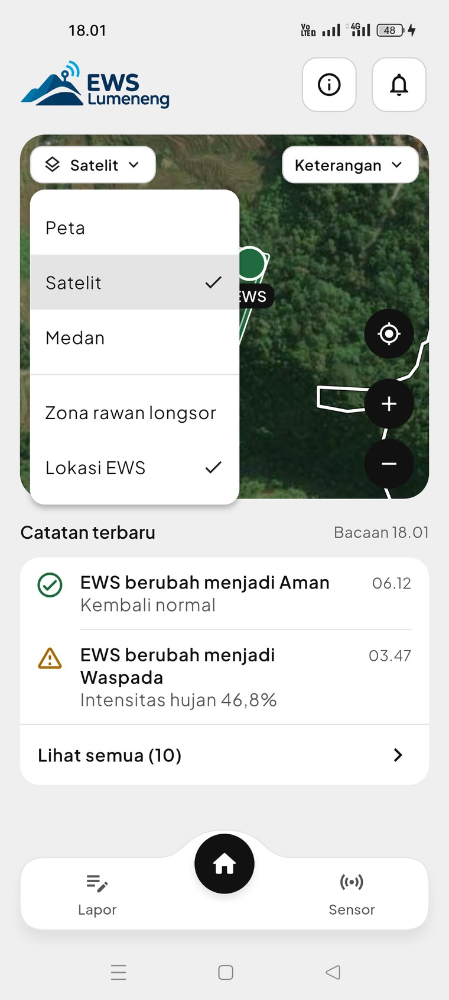
Ketuk tombol di kiri atas peta:
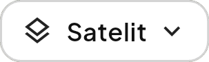
Pilih Peta, Satelit, atau Medan. Tanda centang menunjukkan pilihan yang sedang aktif. Tampilan awal adalah Satelit.
Di bagian bawah menu yang sama ada dua pilihan:
Untuk membuka penjelasan warna, ketuk
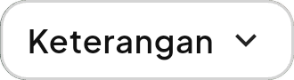
di kanan atas peta. Ketuk sekali lagi untuk menutupnya.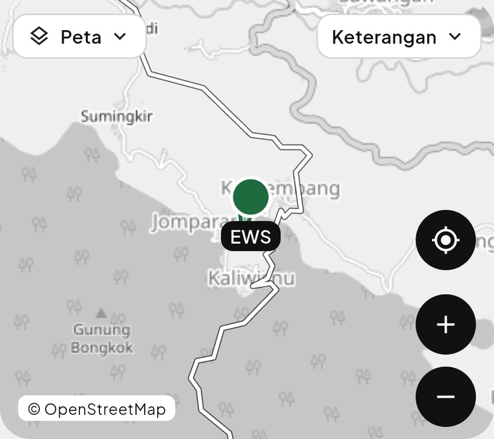
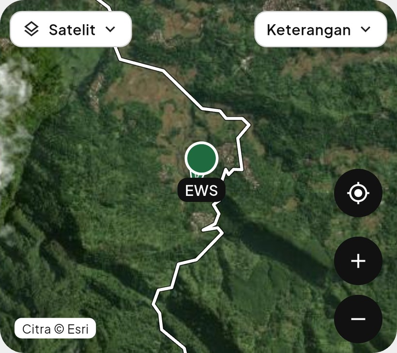
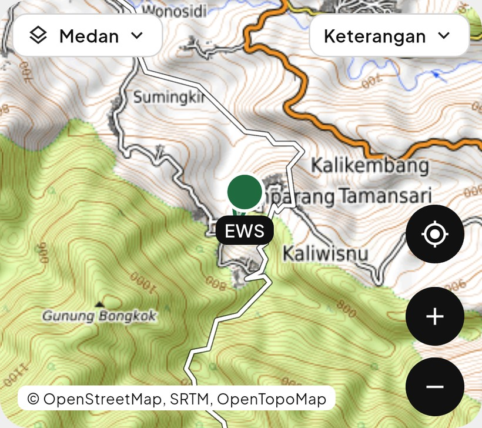
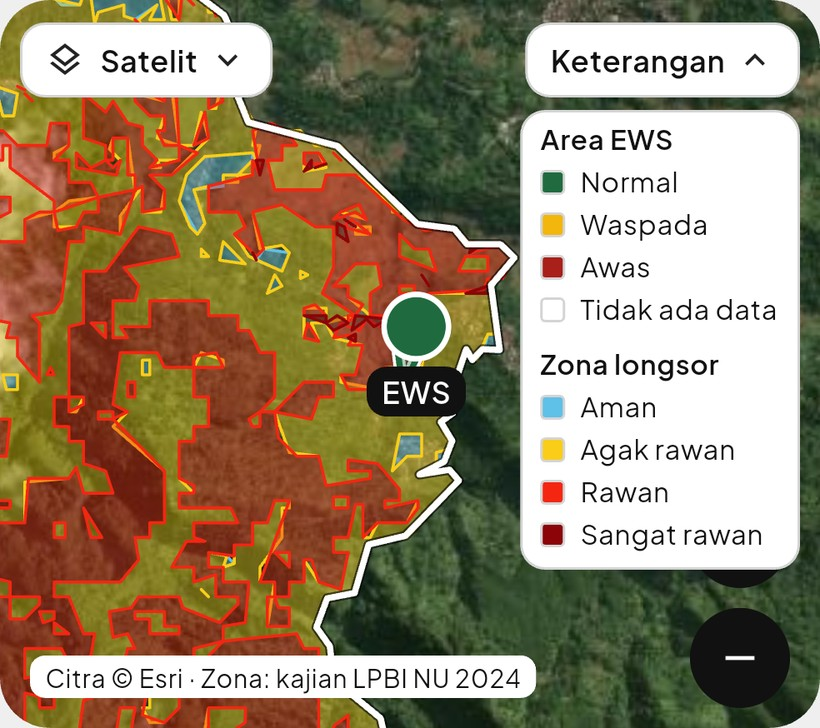
Pilih Zona rawan longsor di menu mode peta. Peta diberi warna sesuai tingkat kerawanan:
| Aman |
| Agak rawan |
| Rawan |
| Sangat rawan |
Sumber zona tertulis di pojok kiri bawah peta: Zona: kajian LPBI NU 2024.
Zona ditelusuri dari gambar peta Kajian Pemetaan Bencana Desa Lumeneng 2024 dan merupakan perkiraan. Zona menunjukkan tempat yang rawan dalam jangka panjang. Kondisi saat ini tetap dilihat dari warna area EWS.
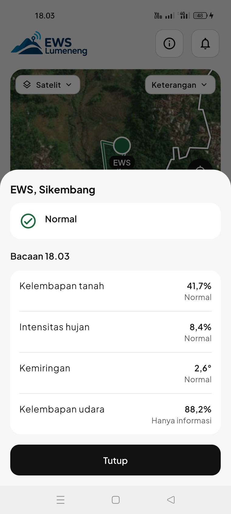
Ketuk penanda EWS di peta. Lembar detail muncul dari bawah layar dan berisi:
Bila alat sedang tidak mengirim data, tertulis Tidak mengirim data sejak diikuti jamnya, dan setiap angka ditandai Data lama.
Ketuk Tutup untuk kembali ke peta.
Ketuk tombol ini di kanan peta. Titik biru menunjukkan posisi HP Anda, dan lingkaran biru muda di sekelilingnya menunjukkan perkiraan ketelitian. Peta ikut bergerak ke posisi yang makin tepat sampai Anda menggeser peta sendiri.
| Pesan yang mungkin muncul | Yang dilakukan |
|---|---|
| Lokasi HP mati. Nyalakan lokasi, lalu coba lagi. | Nyalakan Lokasi/GPS dari panel atas HP. |
| Izin lokasi ditolak, jadi posisi Anda tidak bisa ditampilkan. | Berikan izin lokasi (BAB 2.4). |
| Lokasi belum didapat. Coba lagi di tempat terbuka. | Keluar dari rumah atau menjauh dari atap, lalu ketuk tombol lagi. |
| Titik Anda masih perkiraan, bisa meleset sampai ±… m. | GPS belum mendapat sinyal. Coba lagi di tempat terbuka. |
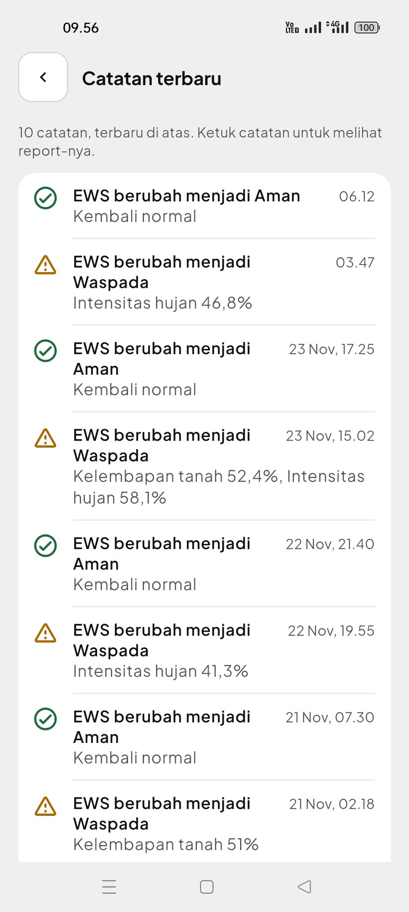
Kartu Catatan terbaru di bawah peta menampilkan dua perubahan status terakhir. Tiap baris berisi ikon status, judul (misalnya EWS berubah menjadi Waspada), penyebabnya, dan jam. Bila kejadiannya bukan hari ini, tanggal ikut ditulis, misalnya 19 Nov, 17.25.
Ketuk Lihat semua untuk membuka semua catatan, yang terbaru di atas. Catatan dibuka 15 baris dulu; ketuk Tampilkan 15 lagi untuk melihat yang lebih lama.
Ketuk satu catatan untuk membuka report-nya: kapan status itu terjadi, berapa lama, dan bacaan sensor saat itu (4.8).
Catatan juga bisa berisi EWS berhenti mengirim data bila alat diam, dan Belum tersambung ke server bila data di HP sudah lama.
Setiap catatan perubahan status dan setiap notifikasi bisa diketuk. Lembar report muncul dari bawah layar dan menjelaskan kejadian itu, termasuk bacaan keempat sensor saat status berubah. Report bisa dibuka dari:
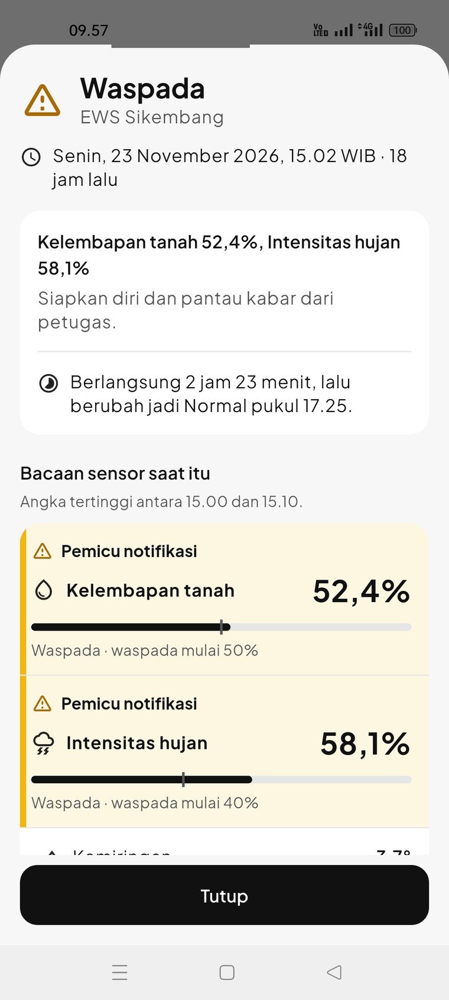
1 2 3 4 5 6 7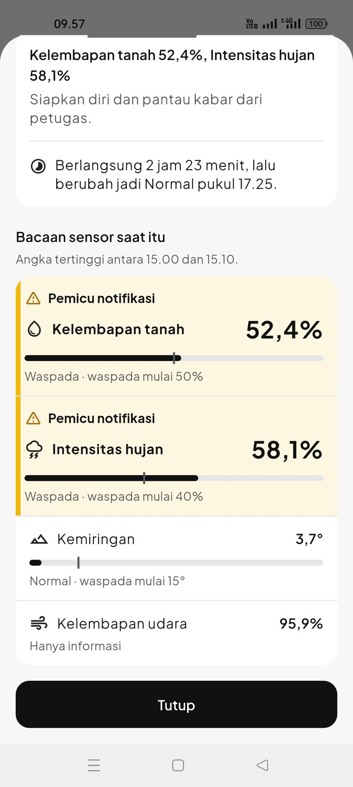
Server menyimpan angka tertinggi tiap blok waktu. Makin lama kejadiannya, makin panjang bloknya:
| Umur kejadian | Tulisan yang muncul |
|---|---|
| Kurang dari 1 jam | Bacaan pukul 09.57. Angka pada menit itu. |
| Kurang dari 1 hari | Angka tertinggi antara 15.00 dan 15.10. Angka tertinggi dalam 10 menit. |
| Kurang dari 7 hari | Angka tertinggi antara 14.00 dan 15.00. Angka tertinggi dalam 1 jam. |
| Lebih dari 7 hari | Server hanya menyimpan bacaan sensor 7 hari terakhir. Status, waktu, dan penyebab tetap tampil. |
| Tulisan lain | Artinya |
|---|---|
| Catatan terbaru, belum ada perubahan sesudahnya. | Status itu masih berlaku sampai sekarang. |
| Mengambil bacaan dari server... | Tunggu sebentar. |
| Bacaan sensor belum bisa diambil. Periksa sinyal. | HP tidak tersambung ke server. Ketuk Coba lagi. |
| Alat tidak mengirim data antara … | Alat diam pada waktu itu, jadi tidak ada angka yang bisa ditampilkan. |
| Tidak ada kiriman saat itu | Satu sensor tidak mengirim angka pada blok itu. |
Report membantu menjelaskan kepada warga mengapa peringatan muncul, misalnya hujan deras yang membuat tanah jenuh air. Bila penyebabnya bukan sensor, misalnya Kabel EWS putus, sensor yang saat itu melewati batas waspada yang ditandai sebagai pemicu.
Ketuk Tutup atau geser lembar ke bawah untuk kembali.
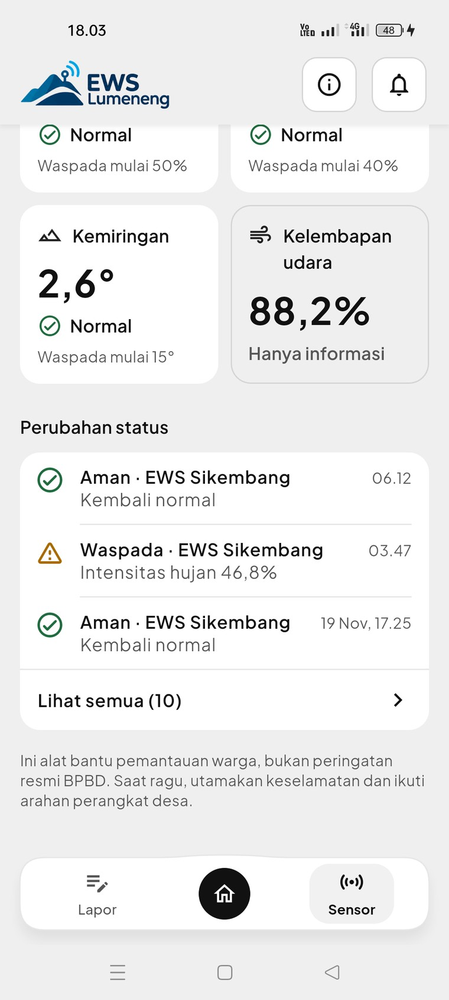
9 10 11| Sensor | Satuan | Artinya | Menentukan status? | |
|---|---|---|---|---|
| | Kelembapan tanah | persen (%) | Seberapa basah tanah di lereng. Tanah yang jenuh air lebih mudah longsor. | Ya |
| | Intensitas hujan | persen (%) | Seberapa basah papan sensor hujan: 0% berarti kering, 100% berarti basah kuyup. | Ya |
| | Kemiringan | derajat (°) | Kemiringan tanah tempat alat dipasang. Bila angkanya bertambah, tanah mungkin bergeser. Angka minus dinilai sama, misalnya −12° sama dengan 12°. | Ya |
| | Kelembapan udara | persen (%) | Kelembapan udara di sekitar alat. | Tidak, hanya informasi |
| Tulisan | Artinya |
|---|---|
| Normal | Angka masih di bawah batas waspada. |
| Waspada | Angka sudah melewati batas waspada. |
| Lewat batas | Angka melewati batas atas yang diatur admin. Admin diminta memeriksa alat. |
| Hanya informasi | Sensor tidak ikut menentukan status (kelembapan udara). |
| Tidak ada data | Sensor tidak mengirim angka. |
| Data lama | Alat sedang tidak mengirim data. Angka berwarna abu-abu adalah bacaan terakhir, bukan kondisi sekarang. |
| Waspada mulai 50% | Batas waspada sensor tersebut. Angkanya diatur admin server dan bisa berubah. |
Data diperbarui otomatis tiap 10 detik selama aplikasi dibuka. Untuk mengambil data saat itu juga, tarik layar Sensor ke bawah lalu lepaskan.
Saat aplikasi ditutup atau HP dikunci, pengambilan data berhenti supaya kuota tidak terpakai. Begitu aplikasi dibuka lagi, data langsung diambil ulang.
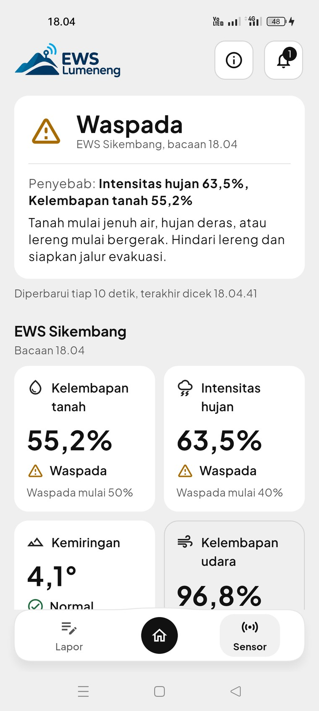
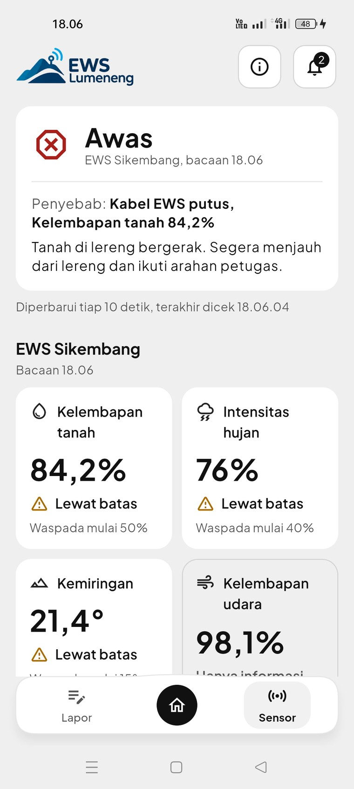
Saat Waspada atau Awas, kartu paling atas menampilkan Penyebab, yaitu sensor yang melewati batas atau kejadian lain seperti Kabel EWS putus. Di bawahnya ada saran untuk warga. Pada kartu sensor, sensor yang melewati batas ditandai segitiga dengan tulisan Waspada atau Lewat batas.
Jangan menunggu angka berikutnya. Segera menjauh dari lereng, ikuti arahan petugas, dan bantu tetangga yang membutuhkan, terutama orang tua dan anak-anak.
Alat EWS hanya memantau satu titik di barat permukiman Sikembang. Tanda longsor di dukuh lain hanya bisa diketahui petugas dari laporan warga. Laporkan secepatnya, terutama saat atau setelah hujan deras.
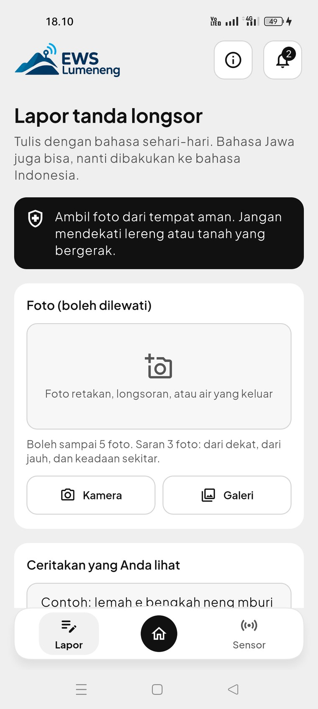
Ketuk Lapor di kiri bawah. Bagian atas menu ini berisi petunjuk menulis dan pengingat keselamatan berwarna hitam.
Saat pertama kali dibuka, HP menanyakan izin lokasi. Pilih Saat aplikasi digunakan (BAB 2.4).
Ketuk Kamera untuk memotret langsung, atau Galeri untuk memilih foto yang sudah ada.
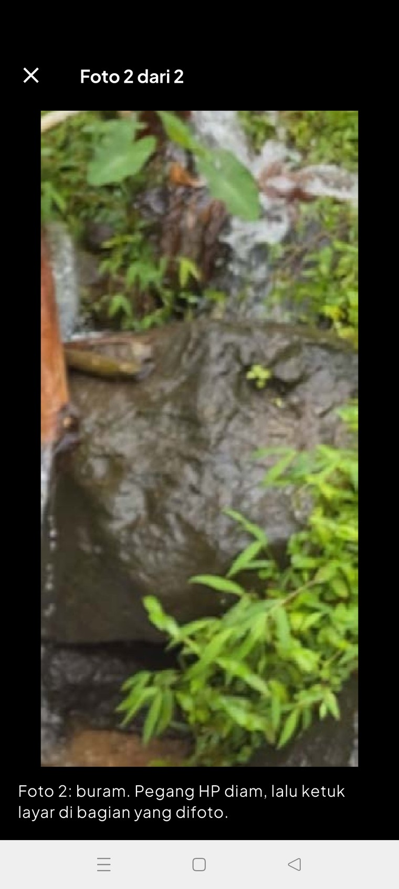
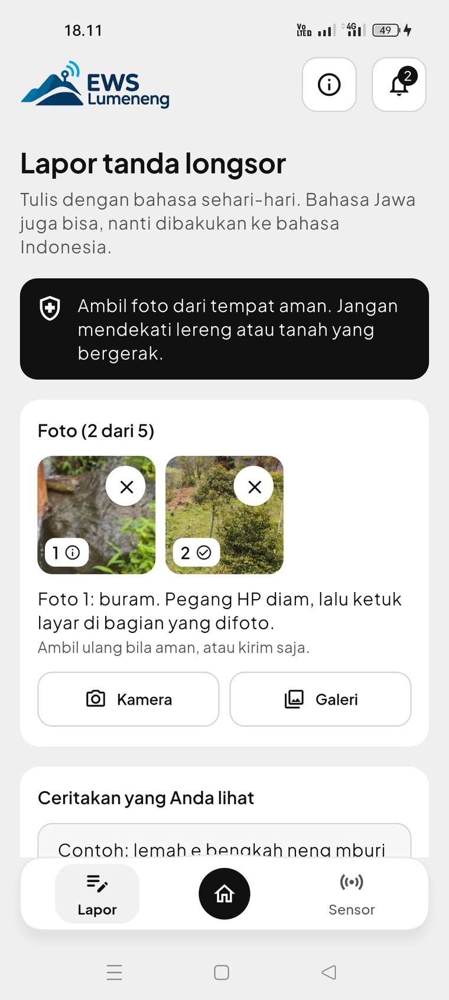
Aplikasi memeriksa setiap foto langsung di HP: ukuran, kecerahan, dan ketajamannya. Foto yang kurang jelas diberi tanda dan sarannya muncul di bawah foto. Foto yang hanya sedikit buram tetap dihitung cukup jelas.
| Masalah | Saran |
|---|---|
| Buram | Pegang HP diam, lalu ketuk layar di bagian yang difoto. |
| Terlalu gelap | Nyalakan lampu kilat atau tunggu lebih terang. |
| Terlalu terang | Jangan menghadap matahari atau lampu. |
| Tidak jelas | Lensa berembun atau kotor, tertutup jari, atau foto hanya dinding polos. Bersihkan lensa dan arahkan ke tanda yang dilaporkan. |
| Resolusi rendah | Pakai foto langsung dari kamera, bukan tangkapan layar. |
Foto yang kurang jelas tetap boleh dikirim. Ambil ulang hanya bila tempatnya aman.
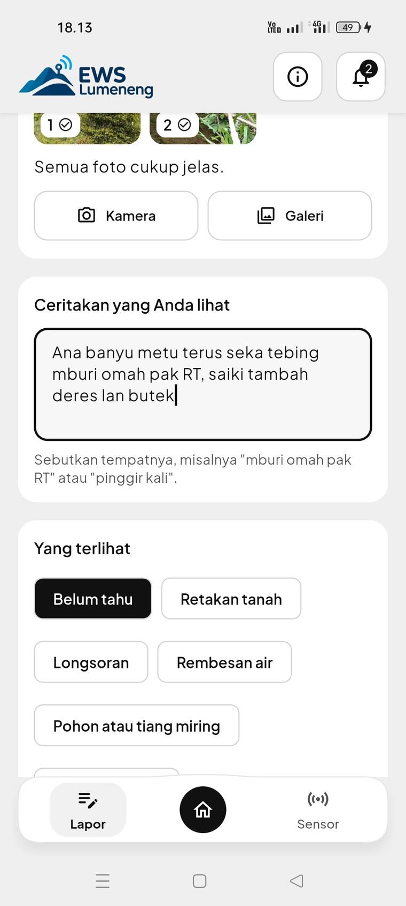
Tulis di kolom Ceritakan yang Anda lihat dengan bahasa sehari-hari. Bahasa Jawa (ngapak) juga bisa, nanti dibakukan ke bahasa Indonesia.
Ana banyu metu terus seka tebing mburi omah pak RT, saiki tambah deres lan butek.
Supaya cerita mudah dipahami petugas, sebutkan:
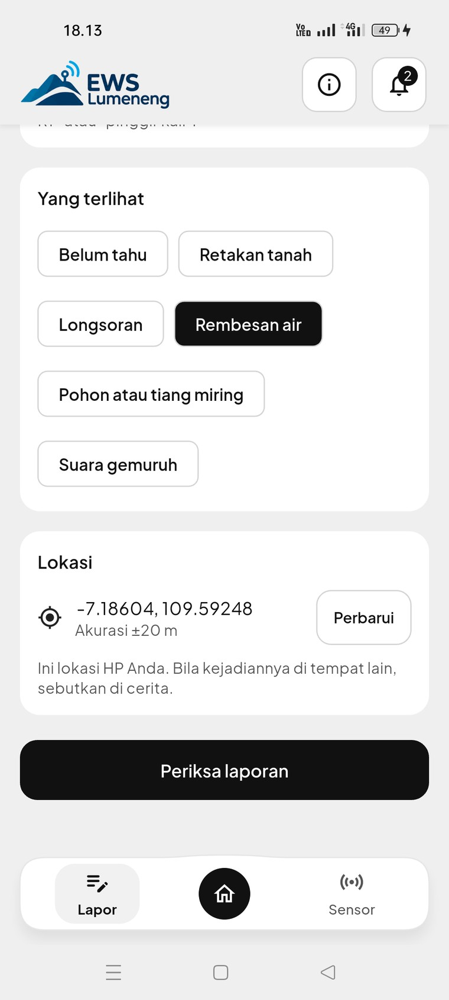
Di bagian Yang terlihat, ketuk satu pilihan yang paling sesuai: Retakan tanah, Longsoran, Rembesan air, Pohon atau tiang miring, atau Suara gemuruh. Pilih Belum tahu bila ragu.
Pilihan ini ikut terkirim sebagai keterangan dari pelapor. Cerita Anda tetap dianalisis sendiri oleh aplikasi.
Langkah 5Bagian Lokasi terisi otomatis dengan koordinat HP dan perkiraan ketelitiannya, misalnya Akurasi ±20 m. Selama tertulis menunggu GPS..., aplikasi masih mempertajam lokasi sampai ±10 m. Ketuk Perbarui untuk mengambil ulang.
Bila kejadiannya di tempat lain, sebutkan tempatnya di cerita.
Setelah itu ketuk Periksa laporan. Tombol ini aktif bila sudah ada cerita atau foto. Bila lokasi belum akurat, aplikasi menunggu sebentar (halaman berikut).
Angka akurasi menunjukkan seberapa jauh titik bisa meleset. Di dalam rumah, lokasi sering hanya perkiraan dari sinyal dan bisa meleset puluhan sampai ratusan meter. Di tempat terbuka, GPS biasanya mencapai 10 sampai 20 m.
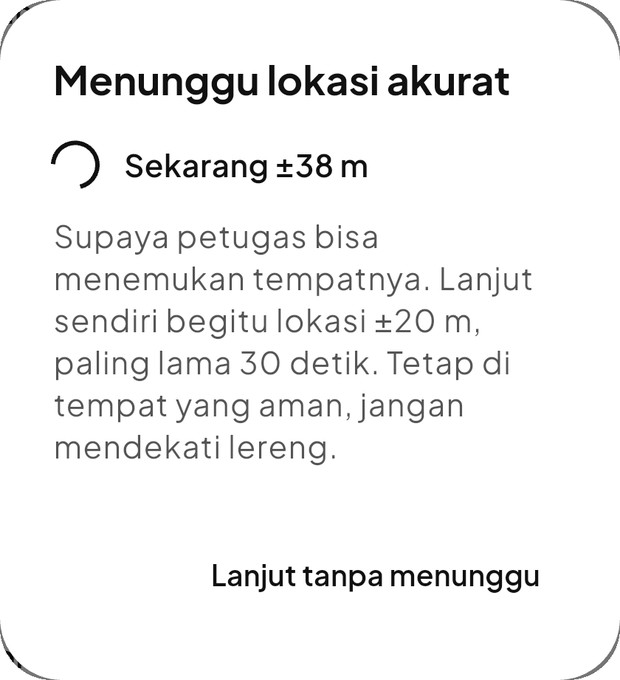
Bila Periksa laporan diketuk saat lokasi masih kasar (lebih dari ±20 m), muncul jendela Menunggu lokasi akurat. Angka Sekarang ±… m mengecil selama GPS mencari.
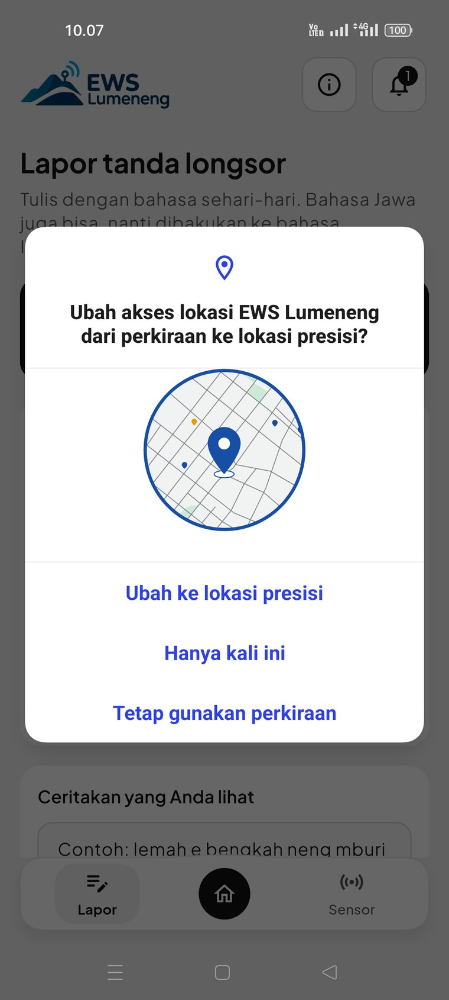
Lokasi Perkiraan bisa meleset sampai 2 km. Bila izin lokasi yang diberikan masih Perkiraan, HP bertanya saat menu Lapor dibuka: Ubah akses lokasi EWS Lumeneng dari perkiraan ke lokasi presisi? Pilih Ubah ke lokasi presisi.
Bila memilih Tetap gunakan perkiraan, bagian Lokasi langsung menampilkan Lokasi masih perkiraan, bisa meleset sampai 2 km dengan tombol Izinkan lokasi tepat. Bila jendela HP tidak muncul lagi, tombolnya berganti menjadi Buka pengaturan izin. Di sana buka Izin > Lokasi, lalu nyalakan Gunakan lokasi tepat (di sebagian HP Gunakan lokasi presisi). Setelah kembali ke aplikasi, lokasi dicari ulang dengan GPS.
Pada sebagian HP, izin Perkiraan tidak menghasilkan lokasi sama sekali, dan yang tertulis Lokasi belum didapat. Pindah ke tempat terbuka tidak membantu. Ubah izinnya ke presisi lewat tombol di bawah peringatan.
Setelah Periksa laporan diketuk, aplikasi membaca cerita dan foto di HP, lalu menampilkan halaman Hasil analisis.
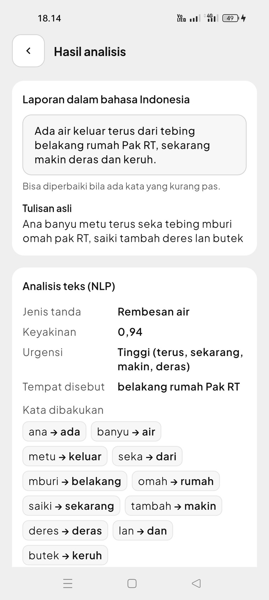
1 2 3 4 5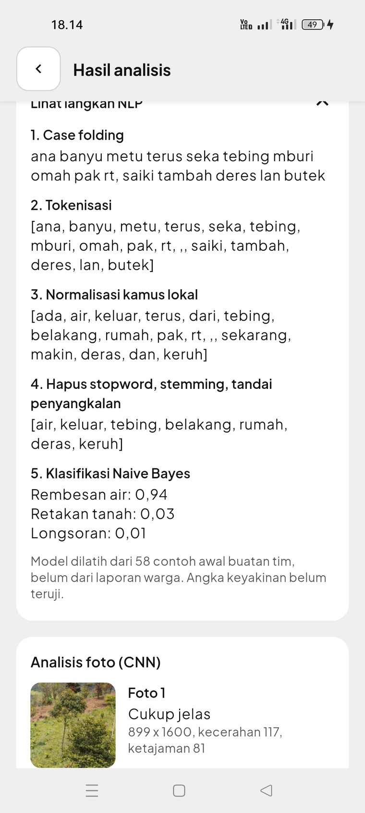
Dugaan dari teks bisa berbeda dari pilihan Anda di Yang terlihat, misalnya Belum dikenali. Keduanya dikirim ke petugas. Ketuk Lihat langkah NLP untuk melihat proses pengolahan cerita: case folding, tokenisasi, normalisasi kamus lokal, penghapusan stopword, dan klasifikasi Naive Bayes. Model ini dilatih dari 58 contoh awal buatan tim, belum dari laporan warga, jadi angka keyakinan dipakai sebagai petunjuk saja.
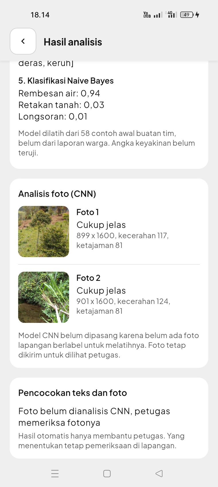
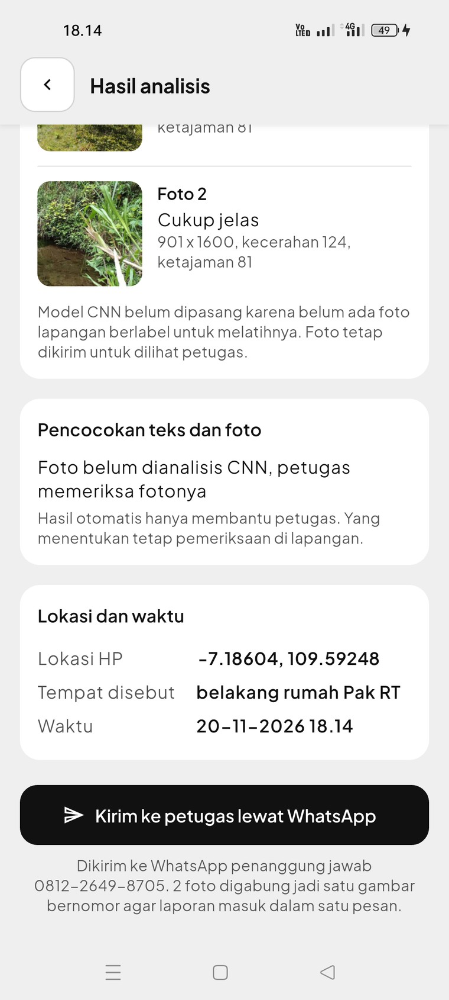
1 2 3 4Kualitas tiap foto: Cukup jelas, atau masalahnya seperti Buram, beserta ukuran, kecerahan, dan ketajaman. Model CNN untuk mengenali isi foto belum dipasang karena belum ada foto lapangan berlabel untuk melatihnya. Foto tetap dikirim untuk dilihat petugas.
Ingin mengubah isian? Ketuk tombol ‹ di kiri atas. Formulir terbuka lagi dan semua isian serta foto masih ada.
Laporan dikirim ke nomor WhatsApp penanggung jawab yang tertulis di bawah tombol. Nomor ini diatur pengelola EWS dari server desa, jadi tidak perlu disimpan di kontak dan selalu yang terbaru. Bila fotonya lebih dari satu, semua foto digabung menjadi satu gambar bernomor, dan isi laporan menjadi keterangan gambar itu. Laporan masuk sebagai satu pesan.
| Laporan | Yang terjadi |
|---|---|
| Tanpa foto | WhatsApp membuka chat penanggung jawab dengan isi laporan. Tekan kirim. |
| Dengan foto, sebelumnya sudah pernah melapor dari HP ini | WhatsApp membuka foto dengan isi laporan sebagai keterangannya. Tekan kirim. |
| Dengan foto, laporan pertama dari HP ini | Dua langkah: sapaan dulu, lalu laporan berfoto. Lihat di bawah. |
WhatsApp hanya mau langsung membuka foto ke chat yang sudah pernah ada. Karena itu, laporan berfoto pertama didahului pesan sapaan.
WhatsApp membuka chat penanggung jawab dengan sapaan di samping. Tekan kirim.
Tombol kembali di WhatsApp membawa ke daftar chat WhatsApp, bukan ke aplikasi. Buka EWS Lumeneng dari daftar aplikasi terbaru atau dari ikonnya.
WhatsApp langsung terbuka lagi dengan foto dan isi laporan. Tekan kirim. Laporan berikutnya dari HP ini cukup satu langkah.
Di halaman Hasil analisis tertulis Laporan dan fotonya belum terkirim. Bila sapaan sudah terkirim, ketuk Kirim laporan dan foto. Bila sapaan belum terkirim, ketuk Buka lagi sapaan.
| Keadaan | Yang terjadi |
|---|---|
| Ada foto yang kurang jelas | Sebelum WhatsApp terbuka, muncul pertanyaan, misalnya Foto 2 kurang jelas. Pilih Ganti foto untuk kembali ke formulir, atau Tetap kirim. Laporan yang tetap dikirim diberi catatan agar petugas memeriksa ulang. |
| WhatsApp tidak terpasang | Menu Bagikan HP terbuka. Pilih aplikasi lain untuk mengirim laporan. |
| Muncul tulisan Teks laporan juga sudah disalin | Foto gagal digabung, jadi teks bisa tidak ikut terisi. Bila kolom pesan WhatsApp kosong, tekan lama kolom pesan lalu pilih Tempel. |
| Setelah laporan dibuka di WhatsApp | Muncul pengingat untuk memastikan pesan sudah terkirim, serta tombol Buat laporan baru dan Kirim lagi. |
Laporan tetap bisa dikirim walaupun ada bagian yang kosong. Yang terjadi:
| Keadaan | Yang terjadi |
|---|---|
| Tanpa foto | Di hasil analisis tertulis Tidak ada foto, dan pencocokan tertulis Hanya keterangan teks, tanpa foto. Laporan terkirim dalam satu langkah. |
| Tanpa cerita | Tertulis Tidak ada cerita. Petugas akan melihat fotonya saja. Pencocokan tertulis Hanya foto, tanpa keterangan. |
| Tanpa lokasi izin ditolak atau GPS mati | Pesan berisi Lokasi HP pelapor: tidak tersedia. Sebutkan tempat kejadian di cerita. |
| Ada kata yang belum dikenal | Kata itu tertulis di Belum ada di kamus dan ikut dikirim. Perbaiki kalimatnya di kolom Laporan dalam bahasa Indonesia bila perlu. |
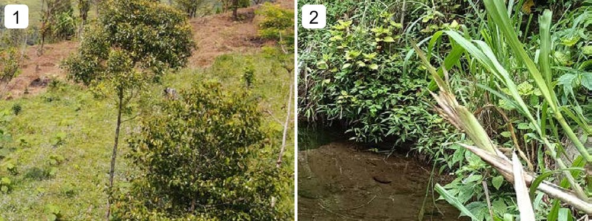
LAPORAN TANDA LONGSOR - EWS Lumeneng Waktu: 20-11-2026 18.14 Lokasi HP pelapor: -7.18604, 109.59248 (akurasi ±10 m) https://maps.google.com/?q=-7.186040,109.592480 Tempat yang disebut: belakang rumah Pak RT Keterangan: Ada air keluar terus dari tebing belakang rumah Pak RT, sekarang makin deras dan keruh. Tulisan asli pelapor: Ana banyu metu terus seka tebing mburi omah pak RT, saiki tambah deres lan butek Yang dilihat pelapor: Rembesan air Dugaan dari teks: Rembesan air, urgensi tinggi Foto: 2 terlampir dalam satu gambar bernomor Pencocokan: Foto belum dianalisis CNN, petugas memeriksa fotonya Hasil otomatis belum diverifikasi. Mohon diperiksa petugas.Bila pelapor tetap mengirim foto yang kurang jelas, pesan berisi tambahan Perlu verifikasi agar petugas menghubungi pelapor atau memeriksa ke lokasi.
Pesan di atas memakai data contoh.
Laporan masuk ke WhatsApp sebagai pesan berfoto dari nomor pelapor. Pada laporan pertama dari seorang warga, pesan sapaan masuk lebih dulu. Balas pelapor bila perlu keterangan tambahan, dan periksa ke lokasi sebelum mengambil keputusan. Hasil analisis otomatis di dalam pesan belum diverifikasi. Nomor penerima laporan bisa diganti pengelola EWS dari web server desa.
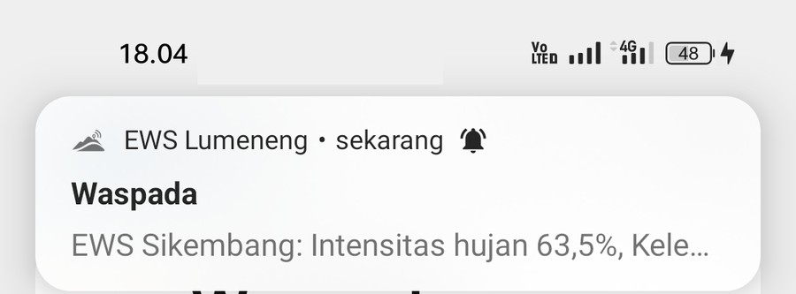
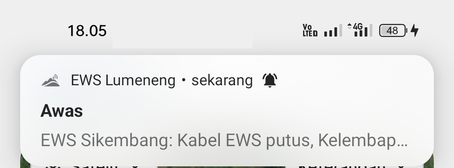
| Keadaan | Yang terjadi di HP |
|---|---|
| Status berubah menjadi Waspada | HP berbunyi dengan suara peringatan Waspada dan muncul notifikasi. |
| Status berubah menjadi Awas | HP berbunyi dengan suara peringatan Awas yang berbeda, dan muncul notifikasi. |
| Alat berhenti mengirim data | Muncul notifikasi Tidak ada data tanpa bunyi dan tanpa getar, supaya HP tidak berbunyi berulang kali saat sinyal alat putus-sambung. |
| Kembali Normal | Tidak berbunyi. Cukup dicatat di lonceng. |
| Aplikasi baru dibuka | Tidak berbunyi. Kondisi saat itu dicatat di lonceng bila bukan Normal. |
| Sinyal HP putus | Tidak berbunyi. Sinyal yang putus bukan perubahan kondisi lereng. |
Suara peringatan mengikuti volume nada dering, bukan volume notifikasi, supaya terdengar lebih keras.
Aplikasi hanya mengecek data selama dibuka. Saat aplikasi ditutup, peringatan hanya masuk bila dikirim server desa lewat internet. Karena itu, saat hujan deras, buka aplikasi EWS Lumeneng untuk melihat kondisi terbaru.
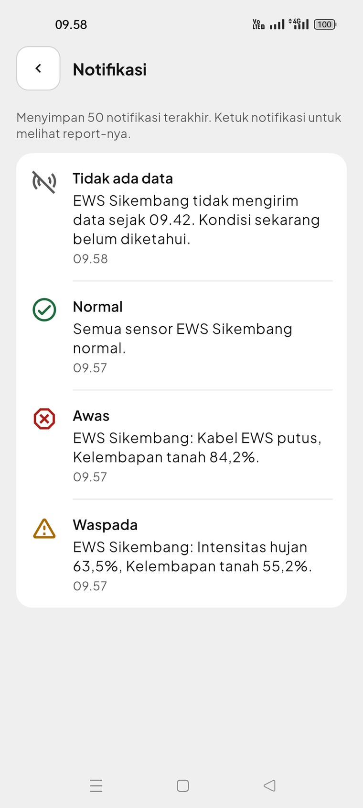
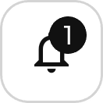
Angka pada lonceng menunjukkan jumlah peringatan yang belum dibaca. Ketuk lonceng untuk membuka halaman Notifikasi.
Buka lonceng. Bila muncul kartu Notifikasi HP belum diizinkan, ketuk Izinkan notifikasi. Bila jendela izin tidak muncul, buka Pengaturan HP > Aplikasi > EWS Lumeneng > Notifikasi lalu nyalakan.
Di pengaturan notifikasi EWS Lumeneng, pastikan Peringatan Awas dan Peringatan Waspada menyala. Kategori Alat tidak mengirim data memang dibuat tanpa suara.
Matikan mode senyap atau jangan ganggu bila ingin peringatan tetap terdengar.
Pastikan HP tersambung internet. Pada HP yang memakai penghemat baterai ketat, keluarkan EWS Lumeneng dari daftar aplikasi yang dibatasi.
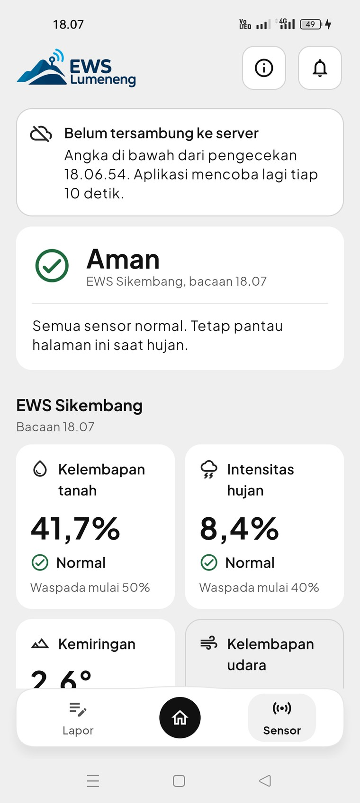
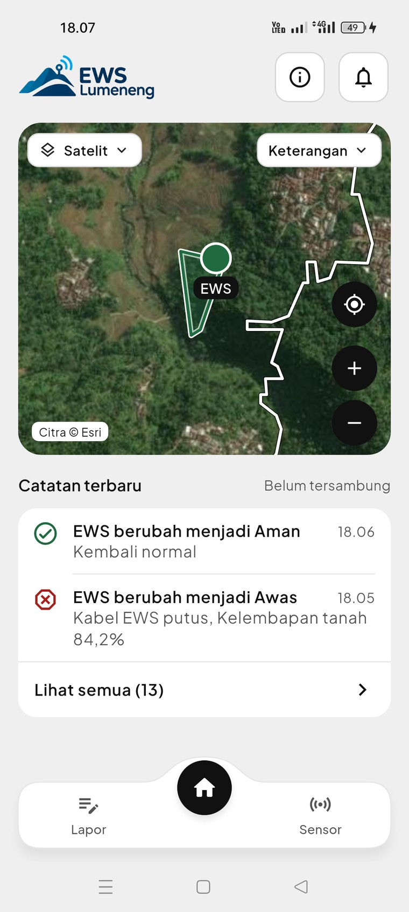
Bila aplikasi gagal mengambil data, misalnya karena sinyal lemah atau kuota habis, data terakhir tetap ditampilkan beserta jam pengecekannya. Aplikasi mencoba lagi tiap 10 detik. Di menu Sensor, tarik layar ke bawah untuk mencoba saat itu juga.
Bila aplikasi tidak tersambung ke server selama 15 menit atau lebih, status Normal tidak lagi ditampilkan sebagai aman. Area di peta menjadi abu-abu dengan garis putus-putus, dan muncul catatan Belum tersambung ke server dengan pesan agar tidak menganggap kondisi sudah aman. Status Waspada dan Awas tetap ditampilkan.
Data terakhir yang pernah diambil tersimpan di HP. Saat aplikasi dibuka tanpa sinyal, data itu langsung ditampilkan dengan tulisan Mengambil data terbaru dan jam pengecekannya. Bila belum pernah ada data sama sekali, muncul tulisan Belum bisa mengambil data sensor dan tombol Coba lagi.
Bila alat EWS diam selama 15 menit atau lebih, server menandai alat tidak mengirim data. Notifikasinya muncul tanpa bunyi.
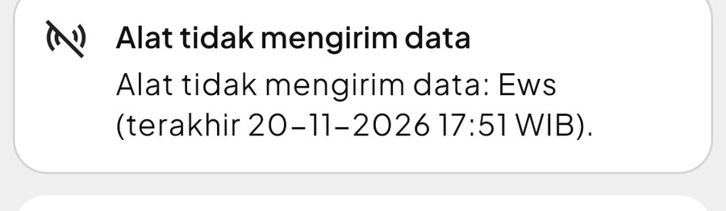
Alat bisa berhenti mengirim justru saat lereng bergerak. Selama data tidak tersedia, ikuti kabar dari perangkat desa dan perhatikan tanda-tanda di sekitar Anda.
Gambar peta diambil dari internet. Bila sinyal lemah, muncul tulisan Peta belum bisa dimuat. Periksa sinyal. dengan tombol Coba lagi. Area EWS, batas desa, dan penanda alat tetap tampil walaupun gambar peta belum termuat.
| Tulisan di layar | Muncul di | Artinya |
|---|---|---|
| Mengambil data terbaru | Animasi pembuka, Sensor | Angka sementara dari simpanan HP. Data baru sedang diambil. |
| Belum tersambung ke server | Sensor, Catatan terbaru | Data terbaru gagal diambil. Angka dari pengecekan terakhir. |
| Belum tersambung | Beranda, di kanan judul Catatan terbaru | Sama dengan di atas. |
| Belum bisa mengambil data sensor atau Belum bisa memuat | Sensor, Beranda | Belum ada data sama sekali di HP. Ketuk Coba lagi. |
| Alat tidak mengirim data atau EWS berhenti mengirim data | Sensor, Beranda | Alat diam 15 menit atau lebih. Jangan anggap aman. |
| Data lama | Kartu sensor, detail alat | Angka bacaan terakhir sebelum alat berhenti mengirim. |
| Peta belum bisa dimuat. Periksa sinyal. | Peta | Gambar peta gagal diunduh. Ketuk Coba lagi. |
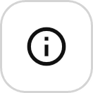
di kanan atas untuk membuka halaman Tentang aplikasi.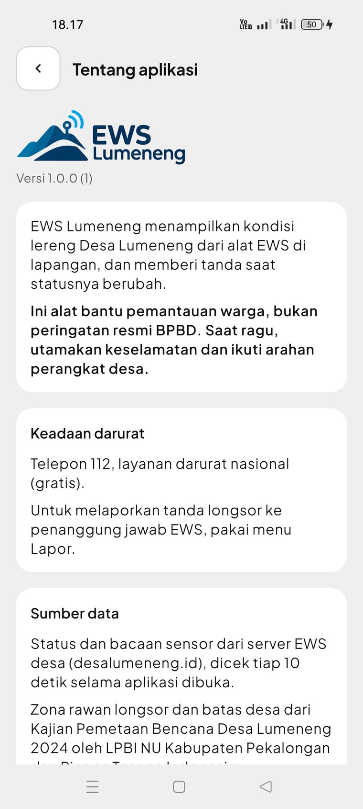
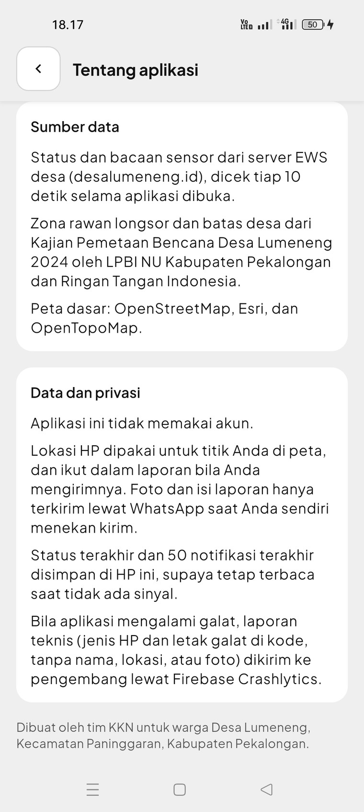
| Masalah | Penyebab yang mungkin | Yang dilakukan |
|---|---|---|
| Aplikasi tidak bisa dipasang | Izin pemasangan dari sumber ini belum aktif, ruang penyimpanan penuh, atau Android lebih lama dari versi 7.0. | Nyalakan Izinkan dari sumber ini, kosongkan ruang penyimpanan, lalu ulangi (BAB 2.2). |
| Muncul Belum tersambung ke server | Sinyal lemah, kuota habis, atau server sedang gangguan. | Periksa data seluler atau WiFi. Aplikasi mencoba lagi tiap 10 detik. Di menu Sensor, tarik layar ke bawah. |
| Area EWS abu-abu dengan garis putus-putus | Alat tidak mengirim data, atau data di HP sudah lebih dari 15 menit. | Jangan anggap aman. Periksa sinyal dan ikuti kabar dari perangkat desa (BAB 8). |
| Gambar peta kosong atau abu-abu | Sinyal lemah saat memuat gambar peta. | Ketuk Coba lagi di pojok peta, atau tunggu sinyal membaik. |
| HP tidak berbunyi saat status berubah | Izin notifikasi belum diberikan, volume nada dering kecil, atau mode senyap aktif. | Ikuti langkah di BAB 7.3. |
| Report tidak menampilkan bacaan sensor | Kejadian lebih dari 7 hari lalu, atau sinyal lemah. | Untuk kejadian baru, periksa sinyal lalu ketuk Coba lagi (4.8). |
| Lupa versi aplikasi yang terpasang | — | Buka Tentang aplikasi. Versi tertulis di bawah logo. |
| Masalah | Penyebab yang mungkin | Yang dilakukan |
|---|---|---|
| Lokasi tidak didapat | GPS mati, izin lokasi ditolak atau hanya Perkiraan, atau berada di dalam ruangan. | Nyalakan lokasi. Bila muncul Lokasi masih perkiraan, ketuk Izinkan lokasi tepat. Selain itu, ketuk Perbarui di tempat terbuka (BAB 6, Langkah 5). |
| Muncul Menunggu lokasi akurat | GPS belum mendapat sinyal satelit. | Tunggu paling lama 30 detik, atau ketuk Lanjut tanpa menunggu. |
| Foto ditandai kurang jelas | HP bergoyang, kurang cahaya, atau lensa kotor. | Ikuti saran di bawah foto. Ambil ulang bila aman, atau kirim saja. |
| Tombol Periksa laporan tidak bisa ditekan | Cerita masih kosong dan belum ada foto. | Isi cerita atau tambahkan minimal satu foto. |
| Kata bahasa Jawa tidak dibakukan | Kata belum ada di kamus aplikasi. | Perbaiki langsung di kolom Laporan dalam bahasa Indonesia sebelum dikirim. |
| WhatsApp tidak terbuka saat mengirim | WhatsApp tidak terpasang. | Pilih aplikasi lain di menu Bagikan, atau pasang WhatsApp. |
| WhatsApp membuka sapaan, bukan laporan | Laporan berfoto pertama dari HP ini. | Kirim sapaannya, lalu buka lagi EWS Lumeneng. Laporan berfoto langsung terbuka (BAB 6.5). |
| Teks laporan tidak muncul di WhatsApp | Foto gagal digabung menjadi satu gambar. | Teks sudah disalin. Tekan lama kolom pesan, lalu pilih Tempel. |
Masalah belum teratasi? Hubungi Tim Aksara Desa Lumeneng atau perangkat desa. Sebutkan merek HP, versi aplikasi, dan tulisan yang muncul di layar.
Retakan tanah, longsoran kecil, rembesan air, pohon atau tiang miring, dan suara gemuruh. Ambil foto hanya dari tempat aman.
Puji syukur ke hadirat Tuhan Yang Maha Esa atas tersusunnya Manual Book Aplikasi EWS Lumeneng ini. Buku ini diharapkan menjadi pegangan bagi warga, perangkat desa, dan relawan dalam memantau kondisi lereng dan melaporkan tanda-tanda longsor di Desa Lumeneng.
Alat dan aplikasi hanya membantu. Kesiapsiagaan tetap bergantung pada warga yang mengenali tanda-tanda longsor, saling memberi kabar, dan mengikuti arahan petugas, seperti warga Dukuh Sikudi pada tahun 1944.
Semoga buku ini bermanfaat dan menjadi bagian dari upaya bersama mewujudkan Desa Lumeneng yang tangguh terhadap bencana.
Aplikasi peringatan dini tanah longsor untuk warga Desa Lumeneng, Kecamatan Paninggaran, Kabupaten Pekalongan. Menampilkan kondisi lereng dari alat EWS di Sikembang, membunyikan peringatan saat status berubah, dan menerima laporan tanda longsor dari warga.
Aplikasi ini alat bantu pemantauan warga, bukan peringatan resmi BPBD. Saat ragu, utamakan keselamatan dan ikuti arahan perangkat desa.
Foto sampul: dokumentasi Kajian Pemetaan Bencana Desa Lumeneng 2024. Ikon antarmuka: Material Icons (Apache License 2.0).